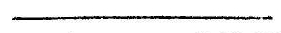

अष्टममाह्निकं
जयरथकृतविवेकाख्यव्याख्योपेतम् ।
श्रथ
श्रीतन्त्रालोके
श्राचार्याभिनवगुप्तपादविरचिते
अष्टममाह्निकं
जयरथकृतविवेकाख्यव्याख्योपेतम् ।

जयकीर्तिरयं जयताज्जगदम्भोजं विभक्तभुवनदलम् ।
रविरिव विकासयति यश्चिदेकनालाश्रयत्वेन ॥

इदानीं द्वितीयार्धेन देशाध्वनः स्वरूपं संगिरितु-
सुपक्रमते
देशाध्वनोऽप्यथ समासविकासयोगा-
संगीयते विधिरयं शिवशास्त्रदृष्टः ॥ १ ॥